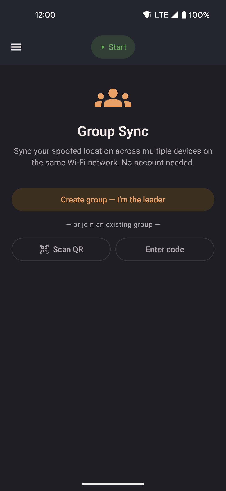

Group Sync
Sync your spoofed location across multiple devices on the same Wi-Fi network. One device acts as the leader and broadcasts its position; the others follow automatically. No account, no internet connection, and no server required.

- One device creates the group and becomes the leader.
- Other devices join by scanning a QR code shown on the leader's screen.
- Followers walk toward the leader's location automatically on the same Wi-Fi, using their own current speed setting.
- Works entirely on-device — no account, no cloud, no internet needed.
How it works
- The leader opens Group Sync from the navigation drawer and taps Create group — I'm the leader.
- A QR code appears on the leader's screen containing the local IP address, port, and group ID.
- Each follower opens Group Sync on their device and scans the QR code with their camera.
- The follower is joined automatically. Enable Follow leader to start mirroring the leader's location.
Leader
The leader device shares its current spoofed position with all connected followers once per second, over the local Wi-Fi network.
| Control | Description |
|---|---|
| QR code | Displays the join invite. Followers scan this to connect. Tap the refresh icon to regenerate a new QR code (rotates the group ID). |
| Sharing toggle | When on, the leader actively broadcasts its position to followers. Turn off to pause broadcasting without leaving the group. |
| Leave group | Stops the server and removes the device from the group. All followers lose the connection and stop receiving updates. |
Follower
Each follower connects to the leader's server and receives position updates. Instead of jumping straight to the leader's position, the follower's spoofed location walks toward it — at whatever speed profile (Slow Walk, Walk, Run, Bike, or Drive) is currently active on that device. If the follower starts far away, it may take a while to catch up, or it may never fully catch up if the leader keeps moving — this is by design, so movement always looks like a real walk rather than an instant jump.
| Control | Description |
|---|---|
| Follow leader toggle | When on, the device walks toward the leader's location in real time. Turn off to pause following while staying in the group. |
| Teleport to leader now | Jumps straight to the leader's last known position immediately, instead of walking there. Shown while Follow leader is on. |
| Leave group | Disconnects from the leader and clears the saved group credentials. |
Persistence
Follower credentials (leader host, port, group ID) are saved to disk. If Follow leader was enabled when the app was last closed, it resumes automatically on the next app launch — including after a device reboot.
Leader state is not persisted. The leader must tap Create group again after a reboot and share a new QR code with followers.
Requirements
- All devices must be on the same Wi-Fi network.
- Mock location must be active on each device independently — the follower spoofs its own GPS using the received coordinates.
- No special permissions beyond what the app already requires.
Limitations
- Mobile data or VPN routing may prevent devices from reaching the leader's local IP address.
- If the leader's Wi-Fi address changes (for example after a router restart), followers must rejoin by scanning a new QR code.
- The leader can only have one active group at a time.
- A follower joining far from the leader walks there at its own speed setting rather than jumping instantly — use Teleport to leader now for an immediate jump.